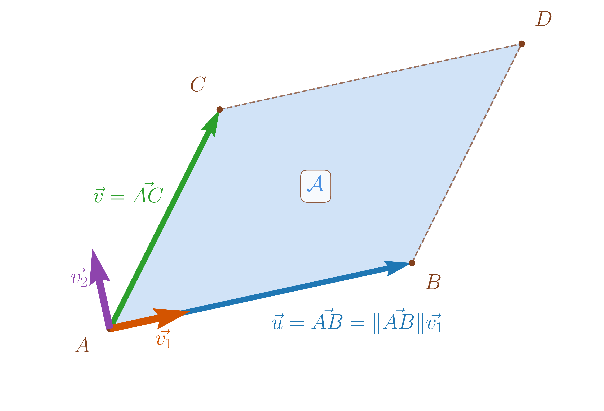
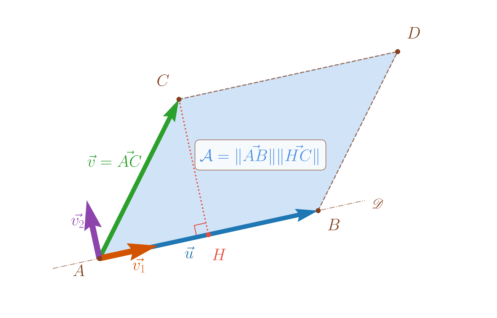
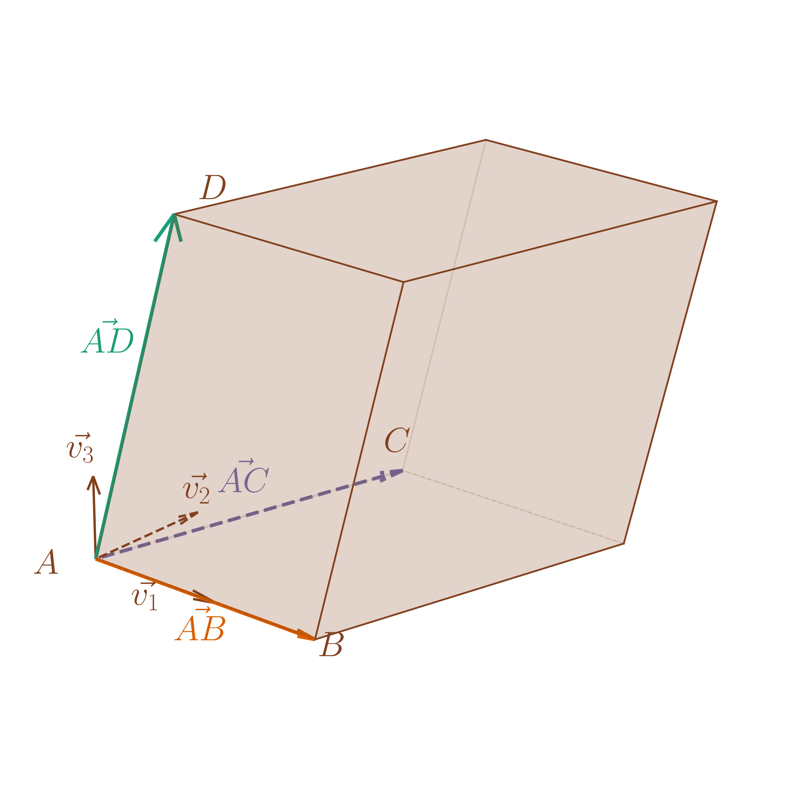
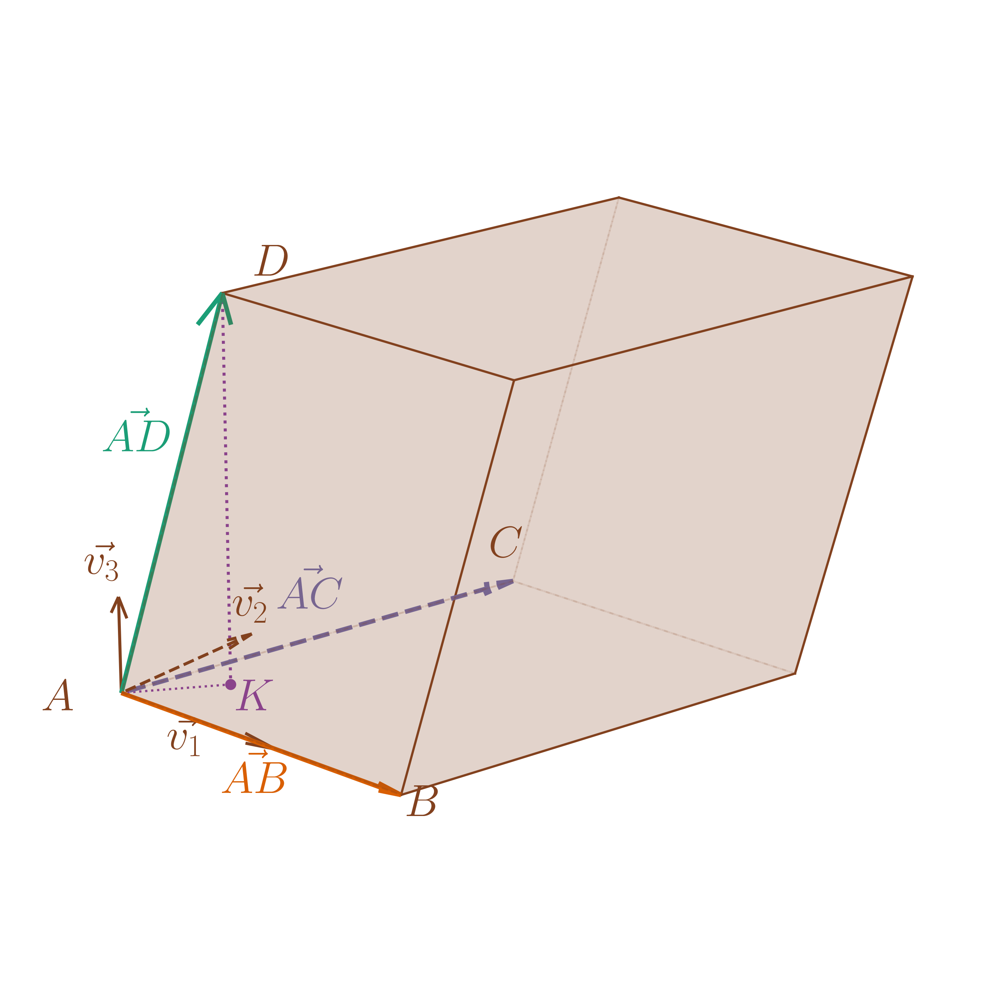
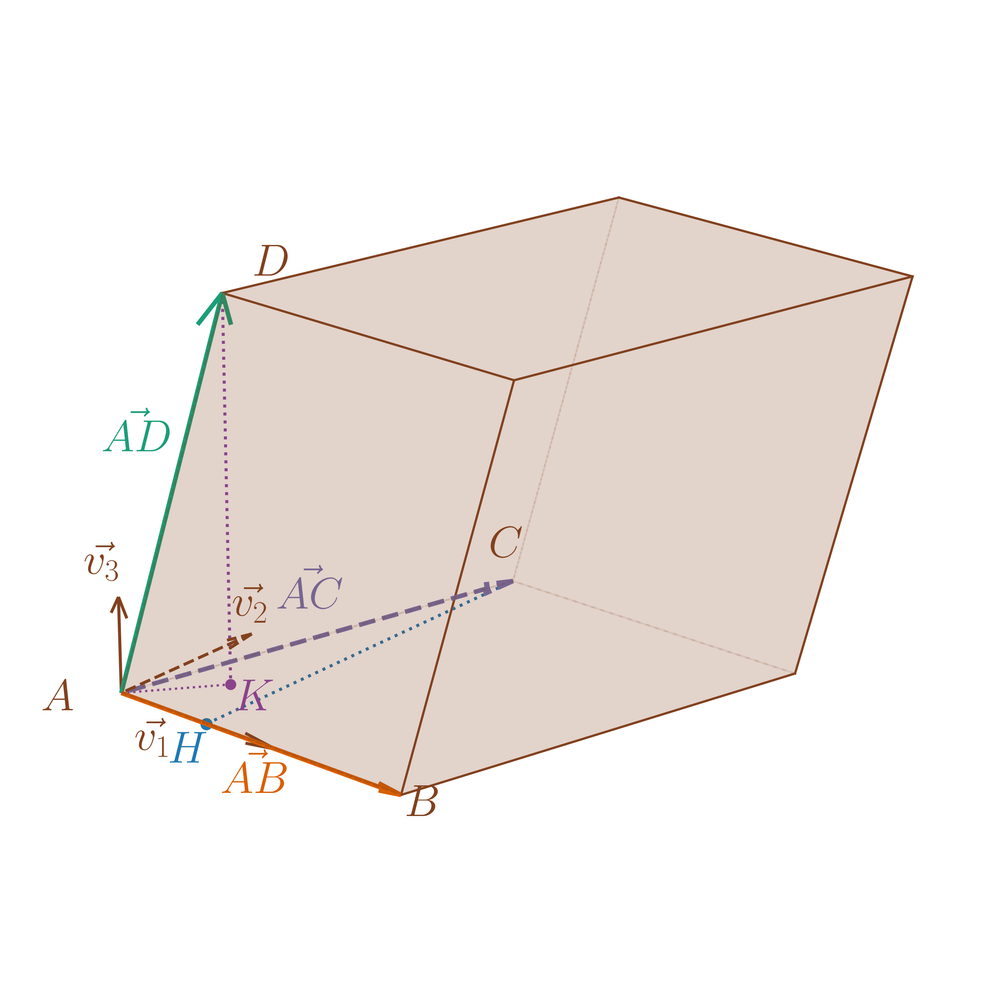
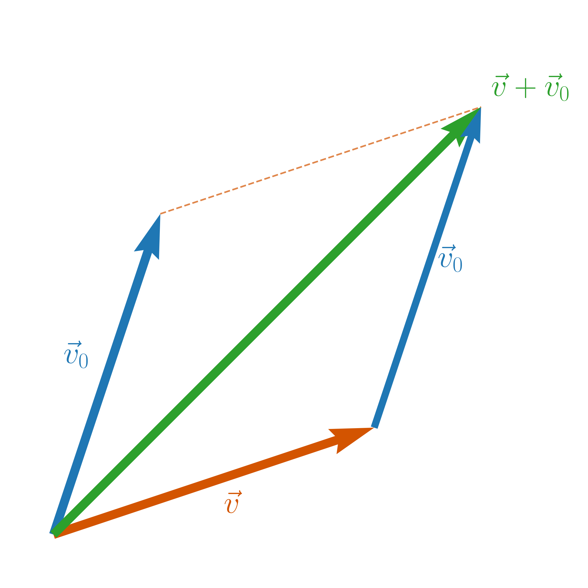
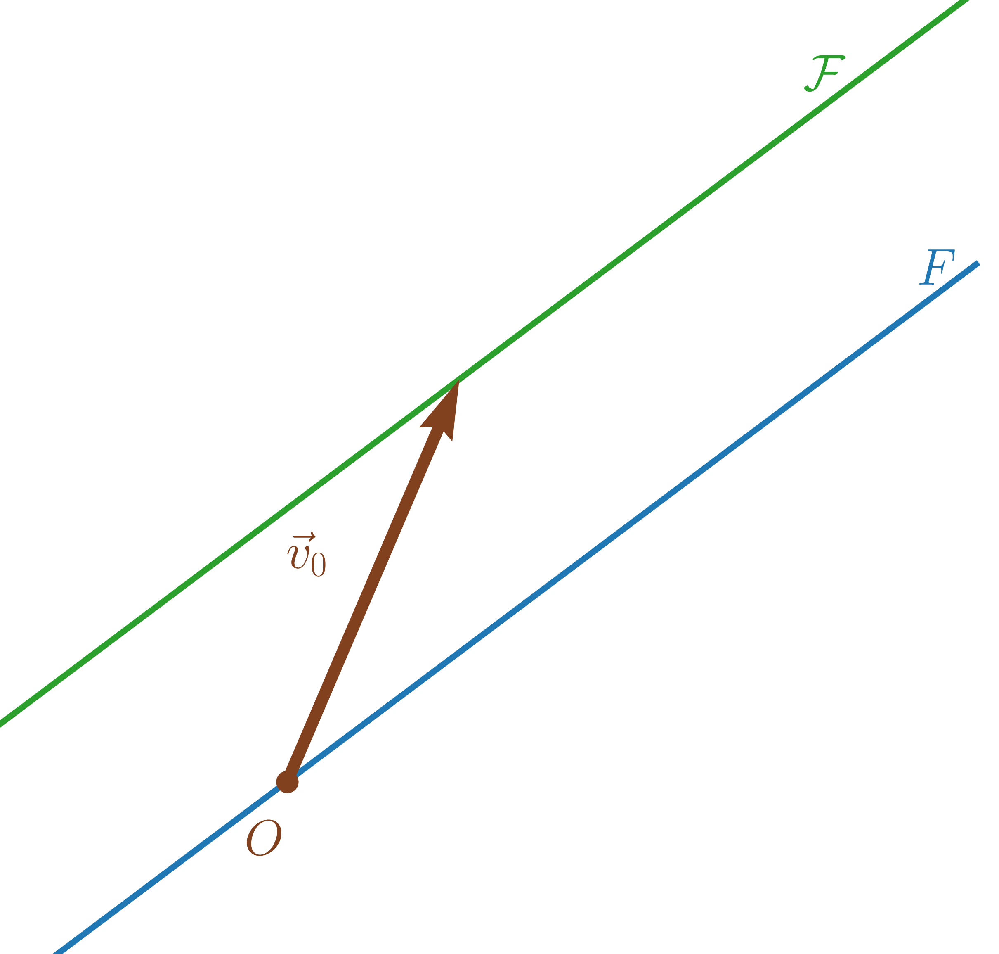
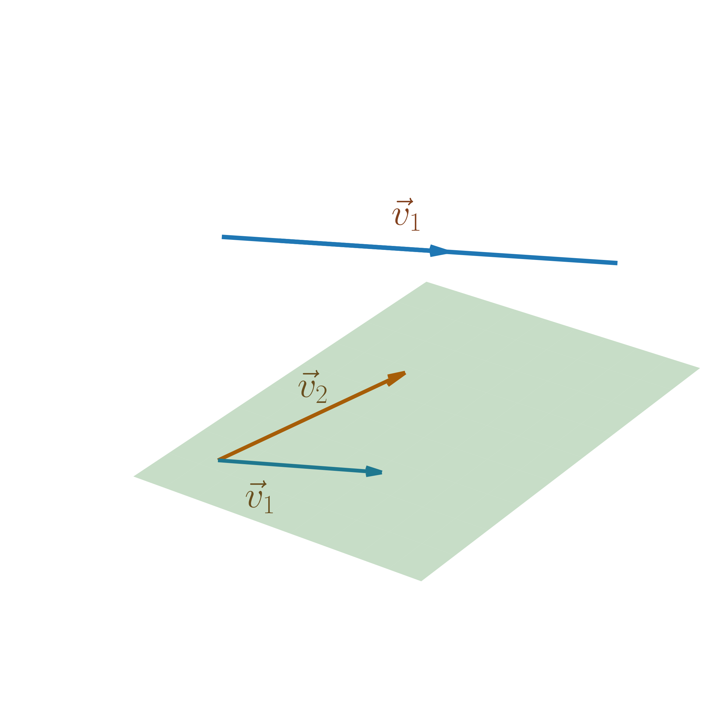
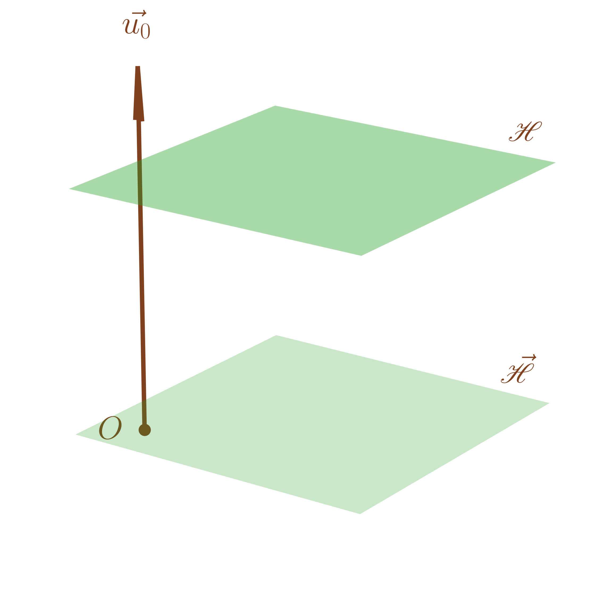
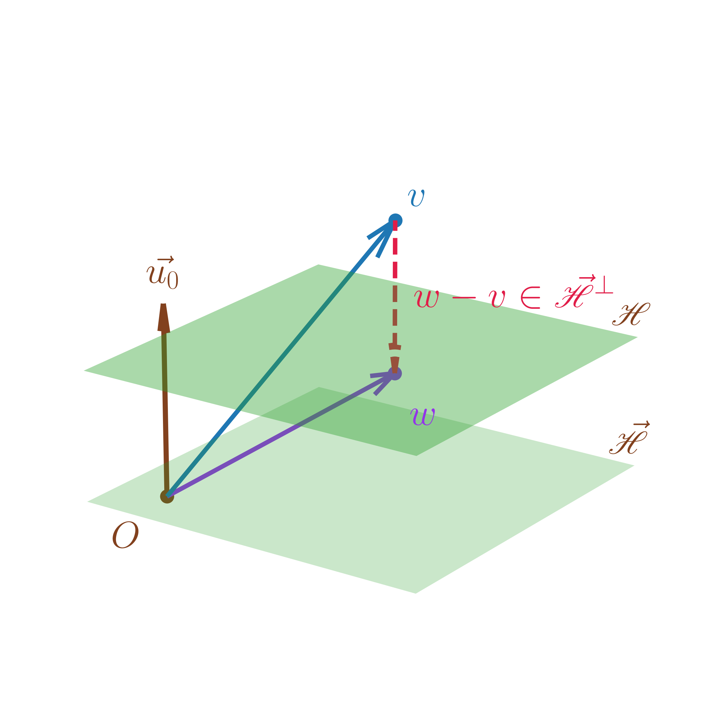

On considère \(\mathscr{P}\), le plan usuel ainsi que trois points \(A,B,C \in \mathscr{P}\) et \(\overrightarrow{u} = \overrightarrow{AB}\) et \(\overrightarrow{v} = \overrightarrow{AC}\). On considère aussi \(D \in \mathscr{P}\) le point tel que \(\overrightarrow{AD} = \overrightarrow{u}+\overrightarrow{v} = \overrightarrow{AB}+\overrightarrow{AC}\) et on note \(\mathcal{A}\) l’aire du parallélogramme \(ABCD\). Enfin, on considère \(\overrightarrow{v_1}\) et \(\overrightarrow{v_2}\) telle que \(\mathscr{B}_0\) est une base orthonormée de \(\mathscr{P}\) et \(\overrightarrow{AB} = \left\|\overrightarrow{AB}\right\|\overrightarrow{v_1}\) (obtenu par le procédé de Gram-Schmidt par exemple).

\(\mathcal{A}\) vaut « base \(\times\) hauteur »
Soit \(\mathscr{D}\) la droite passant par \(A\) et dirigée par \(\overrightarrow{v_1}\) et \(H\) le projeté orthogonal de \(C\) sur \(\mathscr{D}\).
Alors, \(\mathcal{A} = \left\|\overrightarrow{AB}\right\|\left\|\overrightarrow{HC}\right\|\).

\[\mathcal{A} = \left|\det{}_{\mathcal{B}_0}(\overrightarrow{AB}, \overrightarrow{AC})\right|.\]
\(\overrightarrow{AB} = \left\|\overrightarrow{AB}\right\|\overrightarrow{v_1}\) et \(\overrightarrow{AC} = \overrightarrow{AH}+\overrightarrow{HC}\) avec \(\overrightarrow{AH} = \left\|\overrightarrow{AH}\right\|\overrightarrow{v_1}\) et \(\overrightarrow{HC} = \pm \left\|\overrightarrow{HC}\right\|\overrightarrow{v_2}\).
Donc \[\det{}_{\mathcal{B}_0}(\overrightarrow{AB}, \overrightarrow{AC}) = \begin{vmatrix} \left\|\overrightarrow{AB}\right\| & \left\|\overrightarrow{AH}\right\| \\ 0 & \pm \left\|\overrightarrow{HC}\right\| \end{vmatrix}=\pm \left\|\overrightarrow{AB}\right\|\left\|\overrightarrow{HC}\right\| = \pm \mathcal{A}.\]
Soit \(\mathscr{B}\) une base orthonormée de \(\mathscr{P}\) alors \[\mathcal{A} = \left|\det{}_{\mathscr{B}}(\overrightarrow{AB}, \overrightarrow{AC})\right|.\]
Comme \(\mathscr{B},\mathscr{B}_0\) sont orthonormées, \(\det{}_{\mathscr{B}_0}(\mathscr{B}) = \pm 1\) donc \[\mathcal{A} = \left|\det{}_{\mathcal{B}_0}(\overrightarrow{AB}, \overrightarrow{AC})\right| = \left|\det{}_{\mathscr{B}_0}(\mathscr{B})\det{}_{\mathcal{B}}(\overrightarrow{AB}, \overrightarrow{AC})\right| = \left|\det{}_{\mathscr{B}}(\overrightarrow{AB}, \overrightarrow{AC})\right|.\]
Exercice — On considère \(\mathscr{P}\) orthonormé par \((O,\overrightarrow{i},\overrightarrow{j})\) ainsi que les points \(A (1,2)\), \(B (-1,3)\) et \(C = (2,1)\). Calculer l’aire du triangle \(ABC\).
Corrigé — L’aire du triangle est l’aire du parallèlogramme divisé par deux \(\left(\frac{\text{base}\times\text{hauteur}}{2}\right)\), \(\overrightarrow{AB} = -2\overrightarrow{i}+\overrightarrow{j}\) et \(\overrightarrow{AC} = \overrightarrow{i}-\overrightarrow{j}\)
Or, \(\det{}_{\left(\overrightarrow{i},\overrightarrow{j}\right)}(\overrightarrow{AB},\overrightarrow{AC}) = \begin{vmatrix} -2 & 1 \\ 1 & -1 \end{vmatrix} = 1.\) Donc l’aire du triangle vaut \(\frac{1}{2}\).
On considère \(\mathscr{E}\), l’espace usuel ainsi que quatre points \(A,B,C,D \in \mathscr{E}\) et le parallélépipède construits à partir de \(A,B,C,D\) et \(\mathcal{V}\) son volume. On considère aussi \(\mathscr{B}_0=(\overrightarrow{v_1},\overrightarrow{v_2},\overrightarrow{v_3})\), base orthonormée de \(\mathscr{E}\) telle que \(\overrightarrow{AB} = \left\|\overrightarrow{AB}\right\| v_1\) et \(\overrightarrow{AC} \in \mathop{\mathrm{Vect}}(\overrightarrow{v_1},\overrightarrow{v_2})\).

Soit \(K\) le projeté orthogonal de \(D\) sur le plan dirigé par \(\overrightarrow{v_1}\) et \(\overrightarrow{v_2}\) passant par \(A\), alors \[\mathcal{V} = \mathcal{A}\times \left\|\overrightarrow{DK}\right\|\] où \(\mathcal{A}\) est le volume du parallélogramme dirigé par \(A,B,C\).

\[\mathcal{V} = \left|\det{}_{\mathscr{B}_0}(\overrightarrow{AB},\overrightarrow{AC},\overrightarrow{AD})\right|\]
Soit \(H\) le projeté orthogonal de \(C\) sur la droite passant par \(A\), dirigé par \(\overrightarrow{v_1}\).
Alors, \(\mathcal{A}= \left\|\overrightarrow{AB}\right\| \left\|\overrightarrow{HC}\right\|\).
De plus, \(\overrightarrow{AC} = \overrightarrow{AH}+\overrightarrow{HC} = \alpha \overrightarrow{v_1} \pm \left\|\overrightarrow{HC}\right\|\overrightarrow{v_2}.\) et \(\overrightarrow{AD} = \overrightarrow{AK}+\overrightarrow{KD} = \underbrace{\beta \overrightarrow{v_1}+\gamma \overrightarrow{v_2}}_{\overrightarrow{AK} \in \mathop{\mathrm{Vect}}(\overrightarrow{v_1},\overrightarrow{v_2})}\pm \left\|\overrightarrow{KD}\right\|\overrightarrow{v_3}\).
Donc

\[\det{}_{\mathscr{B}_0}(\overrightarrow{AB},\overrightarrow{AC},\overrightarrow{AD} = \begin{vmatrix} \left\|\overrightarrow{AB}\right\| & \alpha & \beta \\ 0 & \pm \left\|\overrightarrow{HC}\right\| & \gamma \\ 0 & 0 & \pm \left\|\overrightarrow{KD}\right\| \end{vmatrix} = \pm \left\|\overrightarrow{AB}\right\|\left\|\overrightarrow{HC}\right\|\left\|\overrightarrow{KD}\right\| = \pm \mathcal{A}\left\|\overrightarrow{KD}\right\| = \mathcal{V}.\]
Soit \(\mathscr{B}\) une base orthonormée de \(\mathscr{E}\) alors \[\mathcal{A} = \left|\det{}_{\mathscr{B}}(\overrightarrow{AB}, \overrightarrow{AC},\overrightarrow{AD})\right|.\]
Comme \(\mathscr{B},\mathscr{B}_0\) sont orthonormées, \(\det{}_{\mathscr{B}_0}(\mathscr{B}) = \pm 1\) donc \[\mathcal{V} = \left|\det{}_{\mathcal{B}_0}(\overrightarrow{AB}, \overrightarrow{AC},\overrightarrow{AD})\right| = \left|\det{}_{\mathscr{B}_0}(\mathscr{B})\det{}_{\mathcal{B}}(\overrightarrow{AB}, \overrightarrow{AC},\overrightarrow{AD})\right| = \left|\det{}_{\mathscr{B}}(\overrightarrow{AB}, \overrightarrow{AC},\overrightarrow{AD})\right|.\]
Dans \((O,\overrightarrow{i},\overrightarrow{j},\overrightarrow{k})\) repère orthonormé de \(\mathscr{E}\), pour \(A (1,-1,-1)\), \(B(0,1,3)\), \(C(1,0,3)\), \(D(0,-2,-1)\), on a \[\begin{aligned} \overrightarrow{AB} & = -\overrightarrow{i}+2\overrightarrow{j}+4\overrightarrow{k} \\ \overrightarrow{AC} & = 0\overrightarrow{i}+\overrightarrow{j}+4\overrightarrow{k} \\ \overrightarrow{AD} & = -\overrightarrow{i}+-\overrightarrow{j}+0\overrightarrow{k} \end{aligned}\] donc \[\begin{vmatrix} -1 & 0 & -1 \\ 2 & 1 & -1 \\ 4 & 4 & 0 \end{vmatrix} \underset{C_1 \leftarrow C_1-C_2}{=} \begin{vmatrix} -1 & 0 & -1 \\ 1 & 1 & -1 \\ 0 & 4 & 0 \end{vmatrix} = -4\begin{vmatrix} -1 & -1 \\ 1 & -1 \\ \end{vmatrix} = -8.\] et \(\mathcal{V} = 8\).
Soit \(E\) un \(\mathbb{K}\)-espace vectoriel et \(v_0 \in E\), la translation de vecteur \(v_0\) est l’application \(\begin{array}{lllll} t_{v_0} & : & E & \to & E \\ & & v & \mapsto & v+v_0 \end{array}\).

Si \(v_0 \neq 0_E\), \(t_{v_0} \notin \mathscr{L}(E)\) car \(t_{v_0}(0_E) = v_0 \neq 0_E\).
Soit \(E\) un \(\mathbb{K}\)-espace vectoriel et \(v_1,v_2 \in E\) alors \(t_{v_1} \circ t_{v_2}= t_{v_1+v_2}\).
Pour \(v \in E\), \(t_{v_1} \circ t_{v_2}(v) = t_{v_1}(v+v_2) = v+v_1+v_2 = t_{v_1+v_2}(v)\).
Soit \(E\) un \(\mathbb{K}\)-espace vectoriel et \(v_0 \in E\) alors \(t_{v_0}\) est bijective de réciproque \(t_{-v_0}\).
Pour \(v \in E\), \(t_{-v_0} \circ t_{v_0}(v) = t_{-v_0+v_0}(v) = t_{0_E}(v) = v = \mathop{\mathrm{Id}}_E(v)\) et \(t_{v_0} \circ t_{-v_0}(v)= = t_{v_0-v_0}(v) = t_{0_E}(v) = v = \mathop{\mathrm{Id}}_E(v)\).
Soit \(E\) un \(\mathbb{K}\)-espace vectoriel et \(\mathscr{F}\) une partie de \(E\).
Alors, \(\mathscr{F}\) est un sous-espace affine de \(E\) s’il existe \(v_0 \in E\) et \(F\) un sous-espace vectoriel de \(E\) tel que \(\mathscr{F}= t_{v_0}(F) = \left\{v+v_0 / v \in F\right\}\).

\(v_0 = t_{v_0}(\underbrace{0_E}_{\in F}) \in \mathscr{F}\).
Soit \(v_0 \in E\), \(\mathscr{F}= \left\{v_0\right\}\) est un sous-espace affine de \(E\) car \(\mathscr{F}= t_{v_0}\left(\left\{0_E\right\}\right)\).
\(\mathscr{F}= E\) est un sous-espace affine de \(E\) car \(\mathscr{F}= t_{0_E}\left(E\right)\).
Soient \(E,E'\) deux \(\mathbb{K}\)-espaces vectoriels, \(f \in \mathscr{L}(E,E')\) ainsi que \(b \in \mathop{\mathrm{Im}}f\) et \(v_0 \in E\) tel que \(f(v_0) = b\).
Alors, \(\mathscr{F}= \left\{v \in E / f(v) = b\right\}\), l’ensemble des solutions de l’équation linéaire \(f(v) = b\), est un sous-espace affine de \(E\) tel que \(\mathscr{F}= t_{v_0}(\mathop{\mathrm{Ker}}f)\).
Soit \(E\) un \(\mathbb{K}\)-espace vectoriel et \(\mathscr{F}\) un sous-espace affine de \(E\).
Soient \(v_0 \in E\) et \(F\) un sous-espace vectoriel de \(E\) tel que \(\mathscr{F}= t_{v_0}(F)\).
Alors, \(F = \left\{u-u' \in E / u \in \mathscr{F}, u' \in \mathscr{F}\right\}\).
Notons \(G = \left\{u-u' \in E / u \in \mathscr{F}, u' \in \mathscr{F}\right\}\) et montrons l’égalité par double-inclusion.
\(G \subset F\). Soient \(u,u' \in \mathscr{F}\), il existe \(v,v' \in F\) tels que \(u = v_0+v\) et \(u' = v_0+v'\).
Donc \(u-u' = v_0+v-(v_0+v') = v-v' \in F\) et \(G \subset F\).
\(F \subset G\). Soit \(v \in F\), alors \(v+v_0 = t_{v_0}(v) \in \mathscr{F}\).
De plus, \(v_0 = t_{v_0}(0_E) = v_0 \in \mathscr{F}\) donc \(v+v_0-v_0 = v \in G\).
Soit \(E\) un \(\mathbb{K}\)-espace vectoriel et \(\mathscr{F}\) un sous-espace affine de \(E\).
Soient \(v_0 \in E\) et \(F\) un sous-espace vectoriel de \(E\) tel que \(\mathscr{F}= t_{v_0}(F)\).
Par la proposition [prop:unicite_direction], \(F\) est unique et il est alors appelé la direction de \(\mathscr{F}\), notée \(\overrightarrow{\mathscr{F}}\).
Si \(\dim \overrightarrow{\mathscr{F}} = 1\), \(\mathscr{F}\) est appelé une droite affine de \(E\),
Si \(\dim \overrightarrow{\mathscr{F}} = 2\), \(\mathscr{F}\) est appelé un plan affine de \(E\).
Soit \(E\) un \(\mathbb{K}\)-espace vectoriel et \(\mathscr{F}\) un sous-espace affine de \(E\) de direction \(\overrightarrow{\mathscr{F}}\) tel que \(\mathscr{F}= t_{v_0}(\overrightarrow{\mathscr{F}})\) avec \(v_0 \in E\).
Alors, soit \(v_1 \in \mathscr{F}\), \(\mathscr{F}= t_{v_1}(\overrightarrow{\mathscr{F}})\).
Montrons \(t_{v_0}(\overrightarrow{\mathscr{F}}) = t_{v_1}(\overrightarrow{\mathscr{F}})\).
\(t_{v_0}(\overrightarrow{\mathscr{F}}) \subset t_{v_1}(\overrightarrow{\mathscr{F}})\). Si \(u \in t_{v_0}(\overrightarrow{\mathscr{F}})\), il existe \(v \in \overrightarrow{\mathscr{F}}\) tel que \(u = v+v_0\).
On a donc \(u = v-v_1+v_0+v_1\).
Or, \(\overrightarrow{\mathscr{F}} = \left\{u-u' \in E / u \in \mathscr{F}, u' \in \mathscr{F}\right\}\) par la proposition [prop:unicite_direction] donc \(v_0-v_1 \in \overrightarrow{\mathscr{F}}\) et \(v-v_1+v_0 \in \overrightarrow{\mathscr{F}}\) donc \(u \in t_{v_1}(\overrightarrow{\mathscr{F}})\).
\(v_0\) et \(v_1\) jouant un rôle symétrique, on a de la même façon \(t_{v_0}(\overrightarrow{\mathscr{F}}) \supset t_{v_1}(\overrightarrow{\mathscr{F}})\).
Bien qu’on ait unicité de \(\overrightarrow{\mathscr{F}}\), on a absolument pas unicité de \(v_0\) d’après la proposition [prop:non_unicite_v0].
Soient \(E\) un \(\mathbb{K}\)-espace vectoriel et \(\mathscr{F}_1\), \(\mathscr{F}_2\) deux sous-espaces affines de \(E\) tels que \(\mathscr{F}_1 \cap \mathscr{F}_2 \neq \emptyset\).
Alors, \(\mathscr{F}_1 \cap \mathscr{F}_2\) est un sous-espace affine de direction \(\overrightarrow{\mathscr{F}_1} \cap \overrightarrow{\mathscr{F}_2}\).
Soit \(v_0 \in \mathscr{F}_1 \cap \mathscr{F}_2\), par la proposition [prop:non_unicite_v0], on a \(\mathscr{F}_1 = t_{v_0}(\overrightarrow{\mathscr{F}_1})\) et \(\mathscr{F}_2 = t_{v_0}(\overrightarrow{\mathscr{F}_2})\).
On a donc \[\mathscr{F}_1 \cap \mathscr{F}_2 = t_{v_0}(\overrightarrow{\mathscr{F}_1}) \cap t_{v_0}(\overrightarrow{\mathscr{F}_2}) = t_{v_0}(\overrightarrow{\mathscr{F}_1} \cap \overrightarrow{\mathscr{F}_2}).\]
Donc \(\mathscr{F}_1 \cap \mathscr{F}_2\) est un sous-espace affine de direction \(\overrightarrow{\mathscr{F}_1} \cap \overrightarrow{\mathscr{F}_2}\).
Soient \(E\) un \(\mathbb{K}\)-espace vectoriel et \(\mathscr{F}_1\), \(\mathscr{F}_2\) deux sous-espaces affines de \(E\). On dit que \(\mathscr{F}_1\) est parallèle à \(\mathscr{F}_2\) si \(\overrightarrow{\mathscr{F}_1} \subset \overrightarrow{\mathscr{F}_2}\).

Soient \(E\) un \(\mathbb{K}\)-espace vectoriel et \(\mathscr{F}_1\), \(\mathscr{F}_2\) deux sous-espaces affines de \(E\).
Si \(\mathscr{F}_1\) est parallèle à \(\mathscr{F}_2\) alors \(\mathscr{F}_1 \cap \mathscr{F}_2 = \emptyset\) ou \(\mathscr{F}_1 \subset \mathscr{F}_2\).
Si \(\mathscr{F}_1 \cap \mathscr{F}_2 \neq \emptyset\), \(\mathscr{F}_1 \cap \mathscr{F}_2\) est un sous-espace affine dirigé par \(\overrightarrow{\mathscr{F}_1} \cap \overrightarrow{\mathscr{F}_2} = \overrightarrow{\mathscr{F}_1}\).
Soit \(v_0 \in \mathscr{F}_1 \cap \mathscr{F}_2\), on a alors \(\mathscr{F}_1 \cap \mathscr{F}_2 = t_{v_0}(\overrightarrow{\mathscr{F}_1})= \mathscr{F}_1\).
Donc \(\mathscr{F}_1 \subset \mathscr{F}_2\).
Soient \(v_1,v_2 \in E\) tels que \(v_1 \neq v_2\).
La droite \(\mathscr{D}= t_{v_1}(\mathop{\mathrm{Vect}}(v_2-v_1))\) est l’unique droite affine contenant \(v_1\) et \(v_2\).
D’abord, \(v_1 = 0_E+v_1\), \(v_2 = (v_2-v_1)+v_1\) donc \(v_1,v_2 \in \mathscr{D}\).
D’autre part, soit \(\mathscr{D}'\) une droite affine contenant \(v_1\) et \(v_2\) alors \(v_1 \in \mathscr{D}'\) et \(v_2-v_1 \in \overrightarrow{\mathscr{D}'}\) par la proposition [prop:unicite_direction].
Or, \(v_2 -v_1 \neq 0_E\) et \(\dim(\overrightarrow{\mathscr{D}'}) = 1\) donc \(\mathscr{D}'\) est dirigé par \(\mathop{\mathrm{Vect}}(v_2-v_1)\) et \(\mathscr{D}' = t_{v_1}(\mathop{\mathrm{Vect}}(v_2-v_1))\).
On se ramène à "une unique droite du plan passent par deux points distincts \(A,B\)" en considérant \(v_1 = \overrightarrow{OA}\) et \(v_2 = \overrightarrow{OB}\).
Soient \(v_1,v_2,v_3 \in E\) tels que \(v_2-v_1\) et \(v_3-v_1\) sont linéairement indépendants.
La plan \(\mathscr{P}= t_{v_1}(\mathop{\mathrm{Vect}}(v_2-v_1,v_3-v_1))\) est l’unique plan affine contenant \(v_1, v_2\) et \(v_3\).
D’abord \(v_1 = 0_E+v_1\), \(v_2 = (v_2-v_1)+v_1\) et \(v_3 = (v_3-v_1)+v_1\) donc \(v_1,v_2,v_3 \in \mathscr{P}\).
D’autre part, soit \(\mathscr{P}'\) une plan affine contenant \(v_1,v_2\) et \(v_3\) alors \(v_1 \in \mathscr{P}'\), \(v_2-v_1 \in \overrightarrow{\mathscr{D}'}\) et \(v_3-v_1 \in \overrightarrow{\mathscr{D}'}\) par la proposition [prop:unicite_direction].
Or, \(v_2-v_1\) et \(v_3-v_1\) dont linéairement indépendants et \(\dim(\overrightarrow{\mathscr{P}'}) = 2\) donc \(\mathscr{P}'\) est dirigé par \(\mathop{\mathrm{Vect}}(v_2-v_1,v_3-v_1)\) et \(\mathscr{P}' = t_{v_1}(\mathop{\mathrm{Vect}}(v_2-v_1,v_3-v_1))\).
Soit \(E\) un \(\mathbb{K}\)-espace vectoriel de dimension \(n \geq 1\).
Un hyperplan affine de \(E\) est un sous-espace affine \(\mathscr{H}\) de \(E\) tel que \(\overrightarrow{\mathscr{H}}\) est un hyperplan de \(E\).
Soit \(H\) un hyperplan d’un espace vectoriel \(E\) de dimension \(n \geq 1\). Alors, il existe \(\varphi_0 \in E^\star\) non nulle telle que \(H = \mathop{\mathrm{Ker}}\varphi_0\).
De plus, soit \(\psi \in E^\star\) non nulle telles que \(H = \mathop{\mathrm{Ker}}\psi\). Alors, il existe \(\lambda \in \mathbb{K}^\star\) tel que \(\psi = \lambda \varphi_0\).
Soit \(E\) un \(\mathbb{K}\)-espace vectoriel de dimension \(n \geq 1\) et \(\mathscr{H}\) un hyperplan affine de \(E\).
Alors, il existe \(\varphi\) une forme linéaire non nulle sur \(E\) et \(b \in \mathbb{K}\) tels que \(\overrightarrow{\mathscr{H}} = \mathop{\mathrm{Ker}}\varphi\) et \(\mathscr{H}= \left\{v \in E/ \varphi(v) = b\right\}\).
Comme \(\overrightarrow{\mathscr{H}}\) est un hyperplan de \(E\), il existe \(\varphi\) une forme linéaire non nulle sur \(E\) tel que \(\overrightarrow{\mathscr{H}} = \mathop{\mathrm{Ker}}\varphi\) (voir le rappel 3.2).
De plus, soit \(v_0 \in \mathscr{H}\),
\[\mathscr{H}= t_{v_0}\left(\overrightarrow{\mathscr{H}}\right) = \left\{v+v_0 / v \in \overrightarrow{\mathscr{H}}\right\} = \left\{v+v_0 / \varphi(v) = 0\right\}.\]
Montrons que \(\mathscr{H}= \left\{v \in E/ \varphi(v) = b\right\}\) avec \(b = \varphi(v_0)\).
\(\mathscr{H}\subset \left\{v \in E/ \varphi(v) = b\right\}\) car pour \(v \in \overrightarrow{\mathscr{H}}\), \(\varphi(v+v_0) = 0+\varphi(v_0) = b\).
\(\mathscr{H}\supset \left\{v \in E/ \varphi(v) = b\right\}\) car si \(\varphi(v) = b\), \(\varphi(v-v_0) = b-\varphi(v_0) = 0\) donc il existe \(u \in \mathop{\mathrm{Ker}}\varphi =\overrightarrow{\mathscr{H}}\) tel que \(v-v_0 = u\) et \(u = v+v_0 \in \mathscr{H}\).
Réciproquement, soit \(E\) un \(\mathbb{K}\)-espace vectoriel de dimension \(n \geq 1\), \(\varphi\) une forme linéaire non nulle sur \(E\) et \(b \in \mathbb{K}\).
Alors, \(\mathscr{H}= \left\{v \in E/ \varphi(v) = b\right\}\) est un hyperplan affine de \(E\) avec \(\overrightarrow{\mathscr{H}} = \mathop{\mathrm{Ker}}\varphi\).
\(\varphi\) est non nulle donc elle est surjective et il existe \(v_0 \in E\) tel que \(\varphi(v_0) = b\).
Montrons alors \(\mathscr{H}= t_{v_0}(\mathop{\mathrm{Ker}}\varphi)\).
\(\mathscr{H}\supset t_{v_0}(\mathop{\mathrm{Ker}}\varphi)\). Si \(v \in \mathop{\mathrm{Ker}}\varphi\), \(\varphi(v+v_0) = b+0=b\) donc \(t_{v_0}(v) \in \mathscr{H}\).
\(\mathscr{H}\subset t_{v_0}(\mathop{\mathrm{Ker}}\varphi)\). Si \(u \in \mathscr{H}\), \(u-v_0 \in \mathop{\mathrm{Ker}}\varphi\) donc il existe \(v \in \mathop{\mathrm{Ker}}\varphi\) tel que \(u-v_0 = v \iff u=v+v_0\).
Soit \(E\) un \(\mathbb{K}\)-espace vectoriel de dimension \(n \geq 1\) et \(\mathscr{H}\) un hyperplan affine de \(E\).
Soient \(\varphi, \psi\) formes linéaires non nulles sur \(E\) et \(b,c \in \mathbb{K}\) tels que \[\mathscr{H}= \left\{v \in E/ \varphi(v) = b\right\} = \left\{v \in E/ \psi(v) = c\right\}.\]
Alors, il existe \(\lambda \in \mathbb{K}\) tel que \(\varphi = \lambda \psi\) et \(b = \lambda c\).
Par la proposition [prop:unicite_direction], \(\overrightarrow{\mathscr{H}} = \mathop{\mathrm{Ker}}\varphi = \mathop{\mathrm{Ker}}\psi\) donc par le rappel 3.2, il existe \(\lambda \in \mathbb{K}\) tel que \(\varphi = \lambda \psi\).
Alors, \(\left\{v \in E/ \varphi(v) = b\right\} = \left\{v \in E/ \lambda \psi(v) = b\right\} = \left\{v \in E/ \psi(v) = c\right\}\) implique \(b = \lambda c\).
Soient \(\mathscr{H}\) un hyperplan affine d’un espace vectoriel \(E\) de dimension \(n \geq 1\) et \(\mathscr{B}=(e_1,\ldots,e_n)\) une base de \(E\).
Alors, il existe \(a_1,\ldots,a_n \in \mathbb{K}\) et \(b \in \mathbb{K}\) non tous nuls tels que pour tout \(v \in E\) tel que pour \(v = \sum_{k=1}^n x_k e_k\),
\[v \in \mathscr{H}\iff \sum_{k=1}^n a_k x_k = b.\]
Ceci est appelé une équation cartésienne de \(\mathscr{H}\) dans la base \(\mathscr{B}\).
De plus, s’il existe \(c_1,\ldots,c_n \in \mathbb{K}\) non tous nuls et \(c \in \mathbb{K}\) tels que pour tout \(v \in E\) tel que pour \(v = \sum_{k=1}^n x_k e_k\),
\[v \in \mathscr{H}\iff \sum_{k=1}^n c_k x_k = c.\] alors il existe \(\lambda \in \mathbb{K}^\star\) tel que pour tout \(1 \leq k \leq n, c_k = \lambda a_k\) et \(c = \lambda b\). Autrement dit, il y a unicité de l’équation cartésienne d’un hyperplan à multiplication par un scalaire près.
Par la proposition [prop:existence_forme_lin_hyper_affine], il existe \(\varphi \in E^\star\) non nulle et \(b \in \mathbb{K}\) tels que \(\mathscr{H}= \left\{v \in E/ \varphi(v)=b\right\}\).
Or, pour tout \(v \in E\) tel que \(v = \sum_{k=1}^n x_k e_k\), \(\varphi(v) = \sum_{k=1}^n x_k \varphi(e_k)\).
On a donc, en notant \(a_k = \varphi(e_k)\) pour \(1 \leq k \leq n\),
\[v \in \mathscr{H}\iff \varphi(v) = b \iff \sum_{k=1}^n x_k a_k = b.\]
Les \(a_k\) sont non tous nuls car \(\varphi \neq 0_{E^\star}\).
Si \(v \in \mathscr{H}\iff \sum_{k=1}^n c_k x_k = c.\) alors \(\mathscr{H}= \left\{v/\psi(v) = c\right\}\) avec \(\psi : \sum_{k=1}^n x_ke_k \mapsto \sum_{k=1}^n c_k x_k\), qui est une forme linéaire non nulle.
On a alors \(\psi(e_k) = c_k\) pour tout \(1 \leq k \leq n\) et par la proposition [prop:ker_forme_line_egalite_affine],il existe \(\lambda \in \mathbb{K}^\star\) tel que pour tout \(1 \leq k \leq n, c_k = \psi(e_k) =\lambda \varphi(e_k) = \lambda a_k\) et \(c = \lambda b\).
Soit \((E,(\cdot \mid \cdot))\) un \(\mathbb{R}\)-espace euclidien dimension \(n \geq 1\) et \(\mathscr{H}\) un hyperplan affine de \(E\).
Alors, \(\dim \overrightarrow{\mathscr{H}}^\perp = 1\) et il existe \(u_0 \in E\) tel que \(\overrightarrow{\mathscr{H}}^\perp = \mathop{\mathrm{Vect}}(u_0)\).
\(u_0\) est appelé un vecteur normal à \(\mathscr{H}\).

Soit \((E,(\cdot \mid \cdot))\) un \(\mathbb{R}\)-espace euclidien dimension \(n \geq 1\) et \(\mathscr{H}\) un hyperplan affine de \(E\).
Soit \(u_0\) un vecteur normal à \(\mathscr{H}\) alors il existe \(b \in \mathbb{R}\) tel que pour \(v \in E\), \[v \in \mathscr{H}\iff (v \mid u_0) = b.\]
\(\begin{array}{lllll} F & : & E & \to & E^\star \\ & & v & \mapsto & \begin{array}{lllll} \varphi_v & : & E & \to & \mathbb{R} \\ & & u & \mapsto & (u \mid v) \end{array} \end{array}\) est bijective.
En effet, \(F\) est linéaire, \(\dim E^\star = \dim E\) et elle est injective car si \(\varphi_v = 0_{E^\star}\), on a \(\varphi_v(v) = \left\|v\right\|^2 = 0\) donc \(v = 0_E\).
Or, il existe \(\varphi \in E^\star\) non nulle et \(c \in \mathbb{R}\) tels que \(\overrightarrow{\mathscr{H}} = \mathop{\mathrm{Ker}}\varphi\) et \(\mathscr{H}= \left\{v \in E/\varphi(v) = c\right\}\).
En notant \(v_0 = F^{-1}(\varphi)\), on a \(v_0 \neq 0_E\) et pour tout \(u \in E, \varphi(u) =(u \mid v_0)\).
Donc \(v_0 \in \mathscr{H}^\perp\), \(\mathscr{H}^\perp = \mathop{\mathrm{Vect}}(v_0)\) et \(\mathscr{H}= \left\{v \in E/(v\mid v_0) = c\right\}\).
Comme \(u_0 \in \mathscr{H}^\perp\) et \(u_0 \neq 0_E\), il existe \(\alpha \in \mathbb{R}\) tel que \(v_0 = \alpha u_0\) et alors \(\mathscr{H}= \left\{v \in E/(v\mid u_0) = b\right\}\) avec \(b = \alpha c\).
Soit \((E,(\cdot \mid \cdot))\) un \(\mathbb{R}\)-espace euclidien dimension \(n \geq 1\) et \(\mathscr{H}\) un hyperplan affine de \(E\).
Soit \(u_0\) un vecteur normal à \(\mathscr{H}\) et \(b \in \mathbb{R}\) tels que \(v \in \mathscr{H}\iff (v \mid u_0) = b\).
Alors, soit \(\mathscr{B}= (e_1,\ldots,e_n)\) une base orthonormée de \(E\) tel que \(u_0 = \sum_{k=1}^n a_k e_k\), soit \(v \in E\), \((v\mid u_0) = \sum_{k=1}^n a_k x_k\) donc \(\sum_{k=1}^n a_k x_k = b\) est une équation cartésienne de \(\mathscr{H}\) dans \(\mathscr{B}\).
Réciproquement, un équation cartésienne de \(\mathscr{H}\) dans une base orthonormée donne les coordonnées d’un vecteur normal.
Soit \((E,(\cdot \mid \cdot))\) un \(\mathbb{R}\)-espace euclidien dimension \(n \geq 1\).
Soient \(v_1,v_2 \in E\).
La distance de \(v_1\) à \(v_2\), notée \(d(v_1,v_2)\), est \(\left\|v_1-v_2\right\|\).
Soit \(\mathscr{F}\) sous-espace affine de \(E\) et \(v \in E\),
la distance de \(v\) à \(\mathscr{F}\), notée \(d(v,\mathscr{F})\), est \(\min_{w \in \mathscr{F}}\left\|v-w\right\|\).
Pour rappel, soit \(\mathscr{B}= (e_1,\ldots,e_n)\) une base orthonormée de \(E\) telle que \(v_1 = \sum_{k=1}^n x_k e_k\) et \(v_2 = \sum_{k=1}^n y_k e_k\).
Alors, \(\left\|v_1-v_2\right\| = \sqrt{\sum_{k=1}^n (x_k-y_k)^2}\).
Soit \((E,(\cdot \mid \cdot))\) un \(\mathbb{R}\)-espace euclidien dimension \(n \geq 1\) et \(\mathscr{H}\) un hyperplan affine de \(E\).
Soit \(v \in E\), il existe \(w \in \mathscr{H}\) unique tel que \(w-v \in \overrightarrow{\mathscr{H}}^\perp\).
\(w\) est appelé le projeté orthogonal de \(v\) sur \(\mathscr{H}\).

Considérons \(u_0 \in E\) et \(b \in \mathbb{R}\), donnés dans la proposition [prop:vecteur_normal_produit_scal], tels que \(\mathscr{H}= \left\{u \in E / (u\mid u_0) = b\right\}\).
On cherche \(w \in \mathscr{H}\) tel que \(w-v \in \overrightarrow{\mathscr{H}}^\perp\) donc \(\alpha \in \mathbb{R}\) tel que \(w-v =\alpha u_0 \iff w = v+\alpha u_0\).
Or, \(w = v+\alpha u_0 \in \mathscr{H}\iff (u_0 \mid v+\alpha u_0 ) = (u_0 \mid v)+\alpha \left\|u_0\right\|^2 = b \iff \alpha = \frac{b-(u_0 \mid v)}{\left\|u_0\right\|^2}.\)
On a donc bien existence et unicité de \(w\).
Soit \((E,(\cdot \mid \cdot))\) un \(\mathbb{R}\)-espace euclidien dimension \(n \geq 1\) et \(\mathscr{H}\) un hyperplan affine de \(E\).
Soit \(v \in E\) et \(w \in \mathscr{H}\) le projeté orthogonal de \(v\) sur \(\mathscr{H}\).
Alors \(d(v,\mathscr{H}) = \left\|v-w\right\|\) et c’est l’unique point où cette distance est atteinte.
D’abord, \(w \in \mathscr{H}\) donc \(\left\|v-w\right\| \geq \min_{w' \in \mathscr{F}}\left\|v-w'\right\| = d(v,\mathscr{H})\).
Ensuite, soit \(w' \in \mathscr{H}\),
\[\begin{aligned} \left\|v-w'\right\|^2 & = \left\|v-w+w-w'\right\|^2 \\ & = \left\|v-w\right\|^2+\left\|w-w'\right\|^2+2(\underbrace{v-w}_{\in \overrightarrow{\mathscr{H}}^\perp}\mid\underbrace{w-w'}_{\in \overrightarrow{\mathscr{H}}}) \\ & = \left\|v-w\right\|^2+\left\|w-w'\right\|^2 \\ & \geq \left\|v-w\right\|^2 \end{aligned}\] avec égalité si et seulement si \(\left\|w-w'\right\|^2 = 0\) donc \(w'=w\).
Soit \((E,(\cdot \mid \cdot))\) un \(\mathbb{R}\)-espace euclidien dimension \(n \geq 1\) et \(\mathscr{H}\) un hyperplan affine de \(E\) d’équation \((u_0 \mid v) = b\) avec \(u_0 \in E\), \(b\in \mathbb{R}\).
Soit \(v \in E\),
\[d(v,\mathscr{H}) = \left\|v-w\right\| = \frac{\left|b-(u_0 \mid v)\right|}{\left\|u_0\right\|}.\]
Dans la preuve de la proposition [prop:proj_ortho_hyper_affine], on a l’expression du projeté orthogonal de \(v\) sur \(\mathscr{H}\) qui est \(w = v+\alpha u_0\) avec \(\alpha = \frac{b-(u_0 \mid v)}{\left\|u_0\right\|^2}\).
On a donc \[d(v,\mathscr{H}) = \left\|v-w\right\| = \left|\alpha\right|\left\|u_0\right\| = \frac{\left|b-(u_0 \mid v)\right|}{\left\|u_0\right\|}.\]
Soit \((E,(\cdot \mid \cdot))\) un espace euclidien de dimension 3, \(\mathscr{B}=(e_1,e_2,e_3)\) une base orthonormée de \(E\) et \(\mathscr{P}\) l’hyperplan d’équation \(2x-y+z=1\) dans \(E\). Déterminons \(d(v,\mathscr{P})\) avec \(v = e_1+3e_2-4e_3\).
\(u_0 = 2e_1-e_2+e_3\) est un vecteur normal à \(\mathscr{H}\) et \(u \in \mathscr{H}\iff (u \mid u_0) = 1\).
Donc \(d(v,\mathscr{P}) = \frac{\left|b-(u_0 \mid v)\right|}{\left\|u_0\right\|} = \frac{\left|1-(2-3-4)\right|}{\sqrt{2^2+1+1}} = \frac{6}{\sqrt{6}}=\sqrt{6}\).